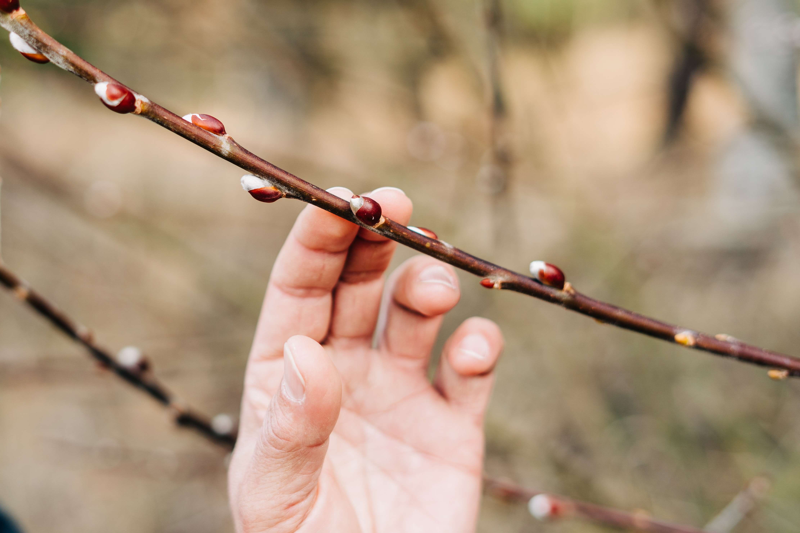

With any meaningful relationship, there is a time for reflection. Here, we will take stock of humankind's long-standing relationship with trees.
First, we will explore our coexistence by highlighting historical events that has happened during the lifespan of the oldest tree alive, Methuselah. Then, we will explore the ways trees treat us. Lastly, we will look at how various collectives have been working to remedy our relationship with trees.
Meet Methuselah
the oldeest tree to date at
4800
years old
He's been around for a lot of American history, including the following events...
Although trees appear to be stoic and unfeeling, they have the ability to give us good feels.
Forest Bathing (shinrin-yoku)
is a Japanese practice of short leisurely visits to a forest. Recent research have found that being amongst the trees can healing physically and emotionally.
Hover see what a simple walk in the park can do:
Volatile tree oils (phytoncides) causes a boost in natural killer cells (increased immunity) Learn more
Salivary cortisol levels (a stress hormone) are significantly lowered Learn more
Both systolic and diastolic blood pressures are lowered Learn More
Decreases activity of sympathetic nerves (fight or flight response) Learn More
Reduces depressive, anger, fatigue, and anxiety symptoms Learn More
Our relationship with trees have been kind of rocky in the last few centuries.
I'll spare you the details, but you can click here to learn more.

There is hope as we are starting to mend this vital relationship. Here are a few companies' creative strategies...
Afforest: Growing a forest anywhere, including your backyard.